|
|
| fishes text index | photo index |
| fishes | Family Synanceiidae | Family Scorpaenidae | Family Batrachoididae | Family Serranidae |
| Stick-like
fishes How to tell them apart? updated Sep 2020 Several different kinds of fishes are long and thin and look like sticks. Here's more on how to tell them apart. |
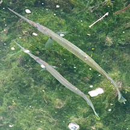 Needflefish Family Belonidae |
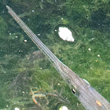 Long narrow pointy jaws full of sharp teeth. Lower and upper jaws the same length. |
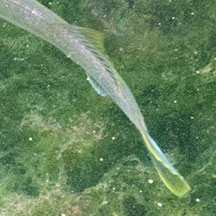 Tail fin small. |
| Swims mostly at the water surface. Quite active. |
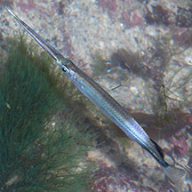 Halfbeak Family Hemiramphidae |
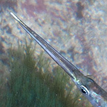 Sharp pointed jaws. Upper jaw much shorter than lower jaws. |
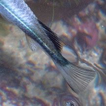 Tail fin small. |
| Swims mostly at the water surface. Quite active. |
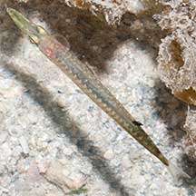 Barracuda (Juvenile) Family Sphyraenidae |
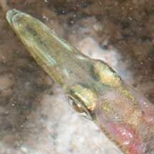 Blunt pointed jaws. Upper jaw about the same length as lower jaws. |
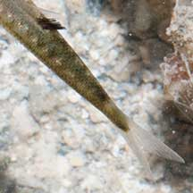 Tail fin small, forked. |
| Swims mostly at the water surface. Quite active. |
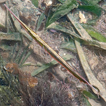 Razorfish Family Centriscidae |
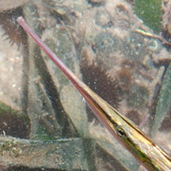 Tube-like snout, long, narrow, pointed. |
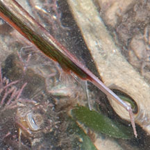 Sharp dorsal spine, in some species bent. Fins tiny, transparent under the spine. |
| Swims head down, with its tail nearer the surface. But can also swim away horizontally. |
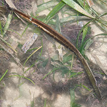 Beaded filefish Family Monacanthidae |
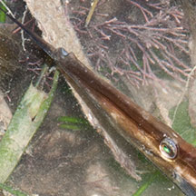 Tiny uptuned mouth. Barbel under the chin that can be straightened out. |
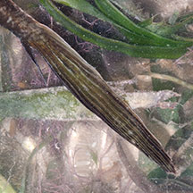 Tail fin large and long. |
| Among seagrasses and floating seaweeds. |
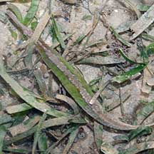 Alligator pipefish Syngnathoides biaculeatus |
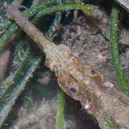 Tube-like snout. Some may have a pair of tiny tentacles at the tip of the snout. |
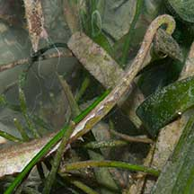 Tail prehensile, no tail fin. |
| Usually among seagrasses, not really at the water surface. |
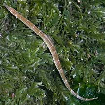 Seagrass pipefish awaiting identification |
 Tube-like snout. |
 Tiny tail fin. |
| Usually among seagrasses, not really at the water surface. |
| More comparisons |
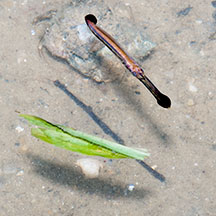 Twig-like halfbeak is a fish. |
 Razorfishes swimming head down. |
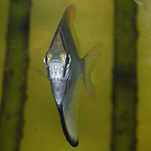 Seen from the front, the flat Silver moony resembles a stick! |
how to tell apart |